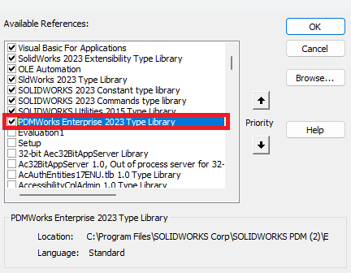
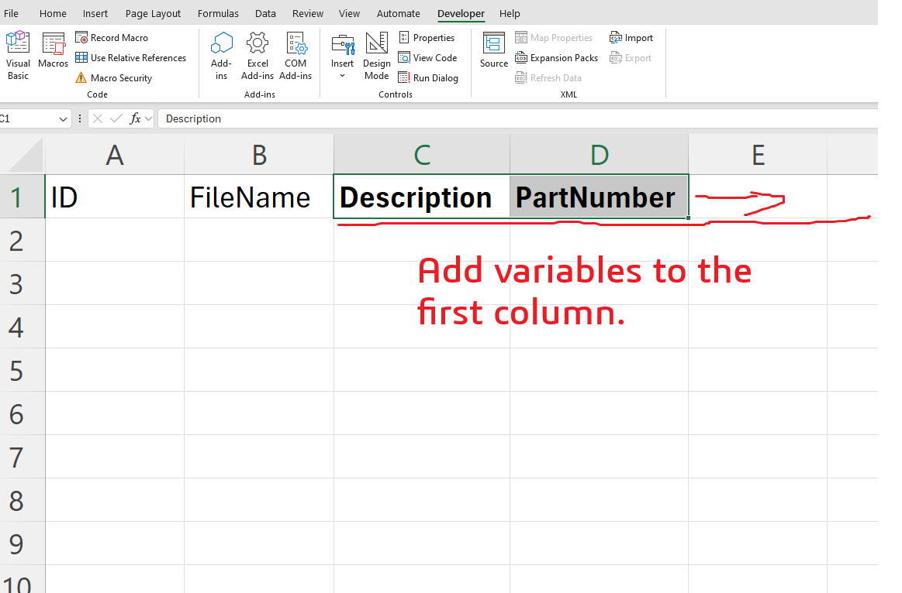

Note
▶️🚨 Watch the video where we wrote this macro and subscribe to our YouTube stream where we make live programming on the SOLIDWORKS API!
Watch Now!
Hit the Subscribe button and stay updated with our live streams!
Mass Edit Files DataCard Variables From Excel
Make sure to add the PDMWorks Enterprise reference before you run this macro from References > Tools.

Macro Description
This VBA macro is useful to collect the values of data card variables for all files found in a folder. The macro will ask you for a folder in PDM and read fill the variables from PDM to Excel.

Excel Macro File
Download it from here
VBA Macro Code
'The code provided is for educational purposes only and should be used at your own risk.
'Blue Byte Systems Inc. assumes no responsibility for any issues or damages that may arise from using or modifying this code.
'For more information, visit [Blue Byte Systems Inc.](https://bluebyte.biz).
Sub ReadFolderFilesVariables()
Dim vault As EdmVault5
Set vault = New EdmVault5
Dim handle As Long
handle = Application.Hwnd
vault.LoginAuto "bluebyte", handle
Dim folderPath As String
Dim vaultrootFolderPath As String
vaultrootFolderPath = vault.RootFolderPath
folderPath = InputBox("Path:", "Folder Content Variables Updater", vaultrootFolderPath)
Dim colIndex As Integer
colIndex = 2
Dim folder As IEdmFolder5
Set folder = vault.GetFolderFromPath(folderPath)
Dim position As IEdmPos5
Dim file As IEdmFile5
Set position = folder.GetFirstFilePosition
While position.IsNull = False
Set file = folder.GetNextFile(position)
' fill the excel range with file metadata
Dim variableEnumerator As IEdmEnumeratorVariable8
Set variableEnumerator = file.GetEnumeratorVariable
Range("A" & colIndex).Value = file.ID
Range("B" & colIndex).Value = file.Name
Dim description
variableEnumerator.GetVarFromDb "Description", "@", description
Range("C" & colIndex).Value = description
Dim partNumber
variableEnumerator.GetVarFromDb "PartNumber", "@", partNumber
Range("D" & colIndex).Value = partNumber
colIndex = colIndex + 1
variableEnumerator.CloseFile True
Wend
End Sub
Sub UpdateFolderFilesVariables()
Dim vault As EdmVault5
Set vault = New EdmVault5
Dim handle As Long
handle = Application.Hwnd
vault.LoginAuto "bluebyte", handle
Dim lastRow As Integer
Dim folderID As Long
folderID = -1
lastRow = Cells(Rows.Count, 1).End(xlUp).Row
For i = 2 To lastRow
Dim ID As Long
Dim file As IEdmFile5
ID = Range("A" & i).Value
Set file = vault.GetObject(EdmObject_File, ID)
If folderID = -1 Then
folderID = GetFolderIDFromFromRowTwo(file)
End If
'check out file
On Error GoTo errorHandler:
If file.IsLocked = False Then
file.LockFile folderID, handle
End If
'set my variables
Dim variableEnumerator As IEdmEnumeratorVariable8
Set variableEnumerator = file.GetEnumeratorVariable
Dim description
description = Range("C" & i).Value
Dim partNumber
partNumber = Range("D" & i).Value
variableEnumerator.SetVar "Description", "@", description
variableEnumerator.SetVar "PartNumber", "@", partNumber
variableEnumerator.CloseFile True
file.UnlockFile handle, "Updated datacard"
errorHandler:
Debug.Print Err.description
Next i
Debug.Print "Completed"
End Sub
Public Function GetFolderIDFromFromRowTwo(ByRef file As IEdmFile5) As Long
Dim position As IEdmPos5
Dim folder As IEdmFolder5
Dim folderID As Long
Set position = file.GetFirstFolderPosition
Set folder = file.GetNextFolder(position)
folderID = folder.ID
GetFolderIDFromFromRowTwo = folderID
End Function
System Requirements
To run this VBA macro, ensure that your system meets the following requirements:
- SOLIDWORKS Version: SOLIDWORKS and PDM 2017 or later
- VBA Environment: Pre-installed with SOLIDWORKS (Access via Tools > Macro > New or Edit)
- Operating System: Windows 7, 8, 10, or later
- Additional Libraries: PDMWorks Enterprise
Customization
Need to modify the macro to meet specific requirements or integrate it with other processes? We provide custom macro development tailored to your needs. Contact us.